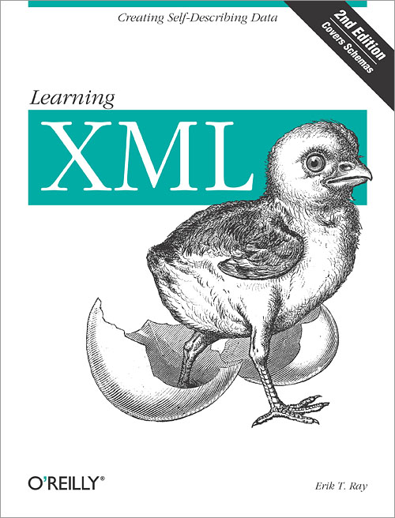

This second edition of the bestselling Learning XML provides web developers with a concise but grounded understanding of XML (the Extensible Markup Language) and its potential-- not just a whirlwind tour of XML. The author explains the important and relevant XML technologies and their capabilities clearly and succinctly with plenty of real-life projects and useful examples. He outlines the elements of markup--demystifying concepts such as attributes, entities, and namespaces--and provides enough depth and examples to get started. Learning XML is a reliable source for anyone who needs to know XML, but doesn't want to waste time wading through hundreds of web sites or 800 pages of bloated text. For writers producing XML documents, this book clarifies files and the process of creating them with the appropriate structure and format. Designers will learn what parts of XML are most helpful to their team and will get started on creating Document Type Definitions. For programmers, the book makes syntax and structures clear. Learning XML also discusses the stylesheets needed for viewing documents in the next generation of browsers, databases, and other devices. Learning XML illustrates the core XML concepts and language syntax, in addition to important related tools such as the CSS and XSL styling languages and the XLink and XPointer specifications for creating rich link structures. It includes information about three schema languages for validation: W3C Schema, Schematron, and RELAX-NG, which are gaining widespread support from people who need to validate documents but aren't satisfied with DTDs. Also new in this edition is a chapter on XSL-FO, a powerful formatting language for XML. If you need to wade through the acronym soup of XML and start to really use this powerful tool, Learning XML, will give you the roadmap you need.
